Задание №1
| Имеется набор данных, состоящий из пар положительных целых чисел. Необходимо выбрать из каждой пары ровно одно число так, чтобы сумма всех выбранных чисел не делилась на 3 и при этом была максимально возможной. Гарантируется, что искомую сумму получить можно. Программа должна напечатать одно число — максимально возможную сумму, соответствующую условиям задачи. |
Скачать файл А
Скачать файл Б
Решение:
- Копируем данные из файла A и вставляем в Excel.
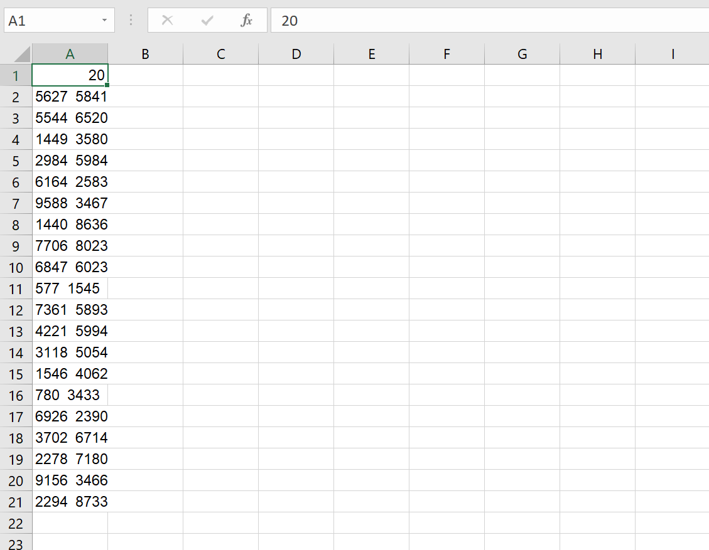
Чтобы всё вставилось нормально, нужно выделить весь текст, зайти в Данные→Текст по столбцам→Далее→ставим галочку на пункте "пробел"→Далее→Готово.
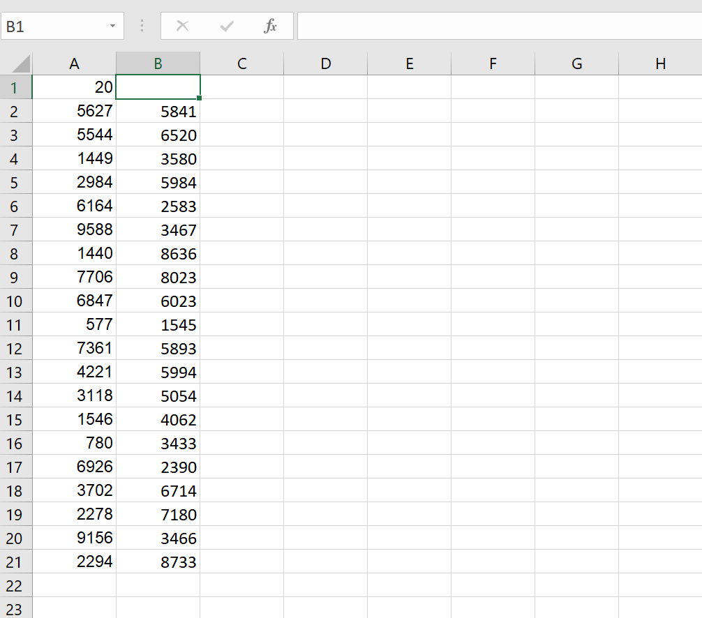
- Теперь нам нужно найти максимальное число из каждой пары с помощью команды МАКС
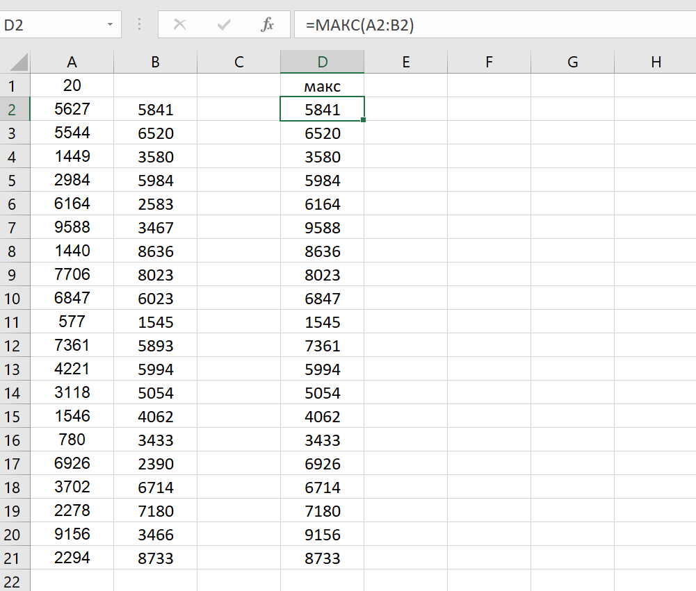
- Далее находим сумму всех максимальных чисел
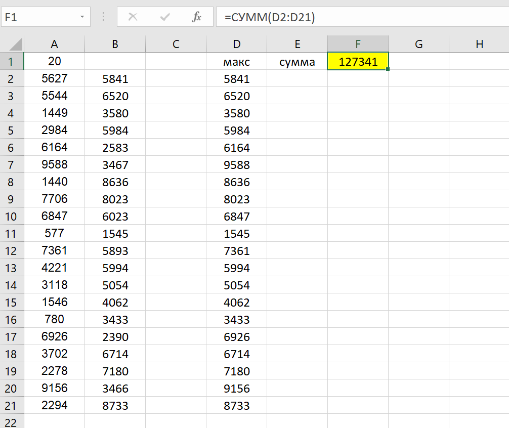
- Теперь нам нужно проверить, делится ли эта сумма на 3. Делать это надо через команду ЕСЛИ и ОСТАТ
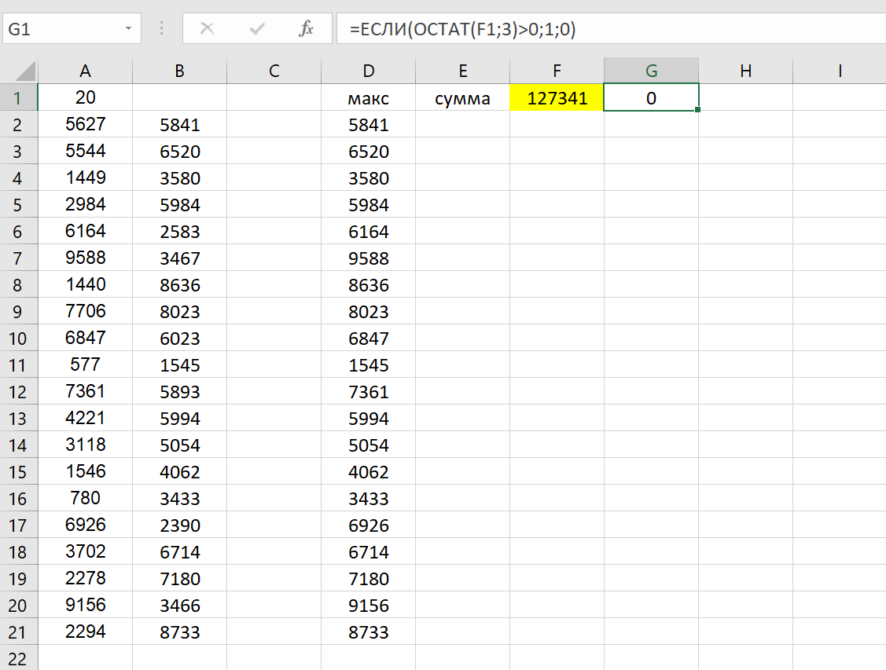
Единицу выводит, если число не делится на 3, ноль, если делится. У нас максимальное число делится на 3, поэтому сразу же записать ответ мы не сможем.
- Нам потребуется ввести новую колонку, в которую мы будем записывать разницу между парами чисел. Идея состоит в том, чтобы заменить одно число на другое так, чтобы в итоге сумма на 3 не делилась и чтобы разница между ними была минимальной. Найдём разницу с помощью этой несложной команды
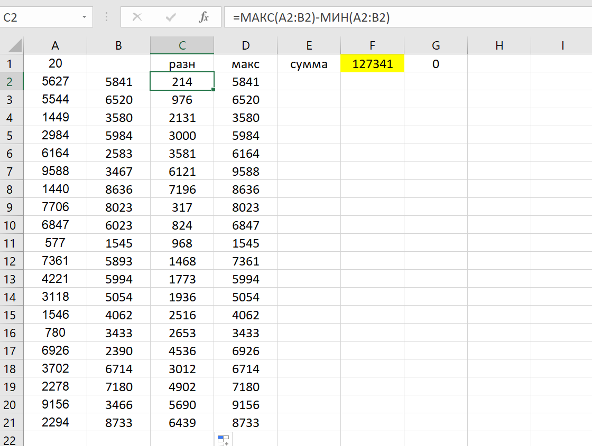
Для удобства необходимо отсортировать всю таблицу по возрастанию разницы. Для этого выделяем всю таблицу, кроме первой строки→Данные→Сортировка→Сортировать по→Столбец С(в моём случае столбец С, так как разница записана именно в нём)→Порядок→По возрастанию.
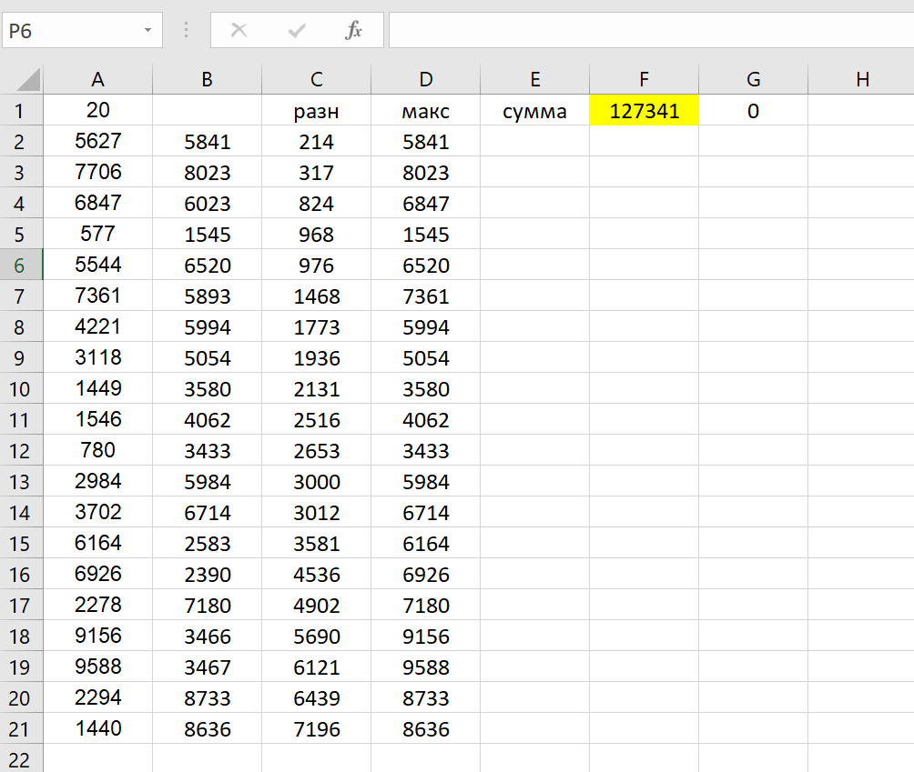
- Мы видим, что самая минимальная разница на 3 не делится (число делится на 3 тогда, когда сумма цифр этого числа делится на 3), так что мы можем заменить число 5841 на более меньшее число 5627. Менять мы его будем в колонке "макс".
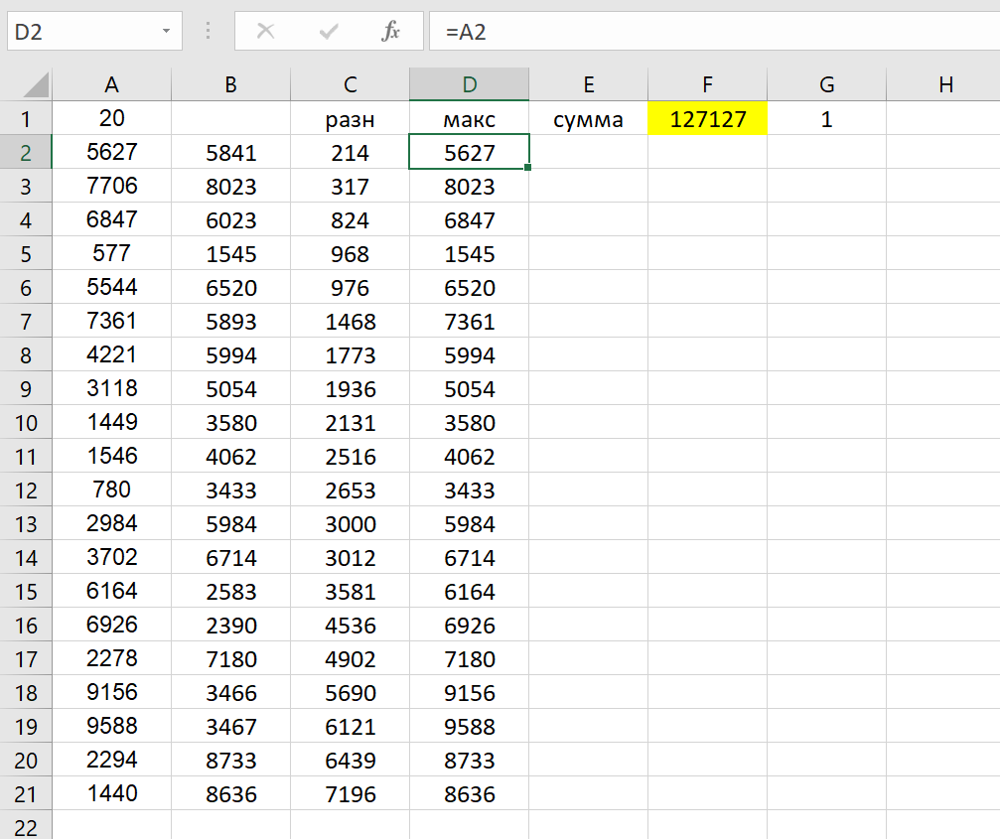
Мы видим, что теперь сумма на 3 не делится (1), так что 127127 - наш первый ответ
- Теперь работаем с файлом Б. В нём нужно сделать точно такие же действия. В результате у нас получится такая таблица
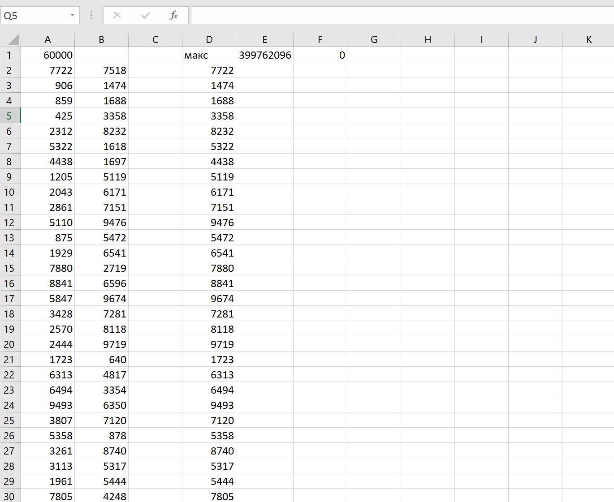
- Здесь мы так же не можем записать ответ сразу, так что добавляем колонку с разницой
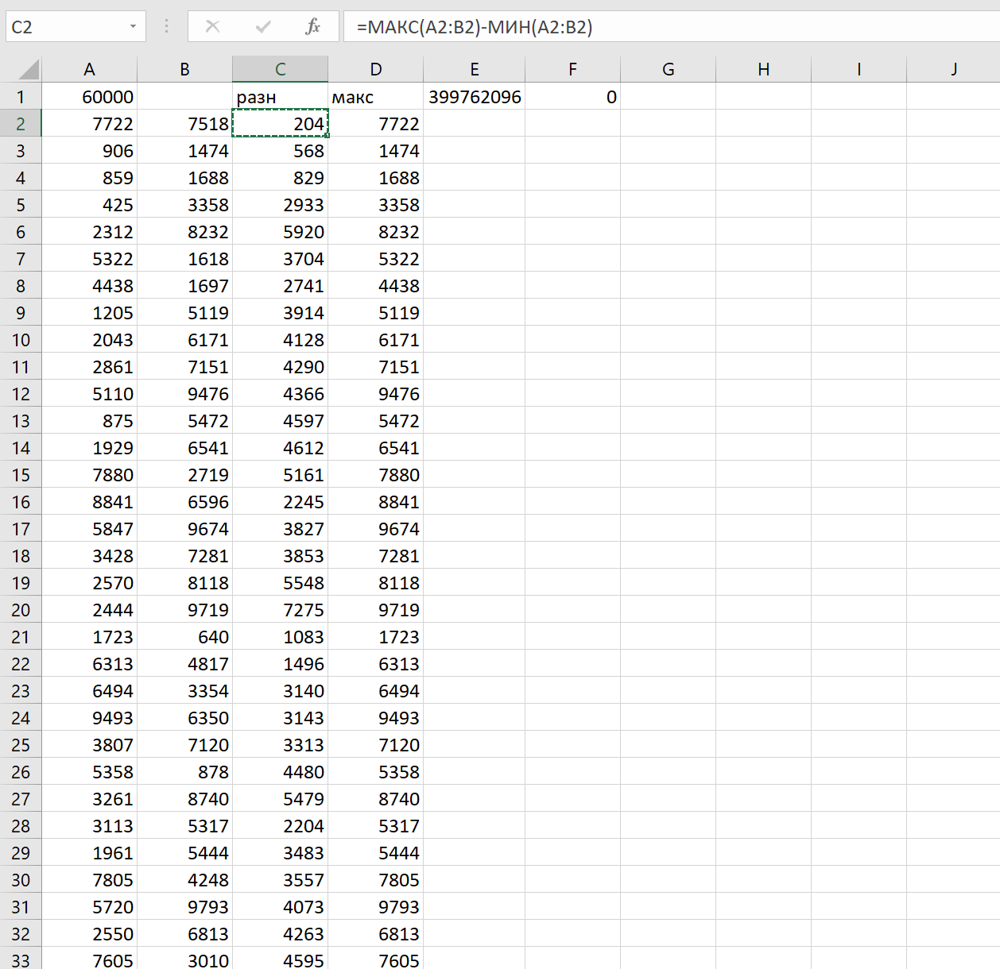
И сортируем таблицу по убыванию разницы тем же методом
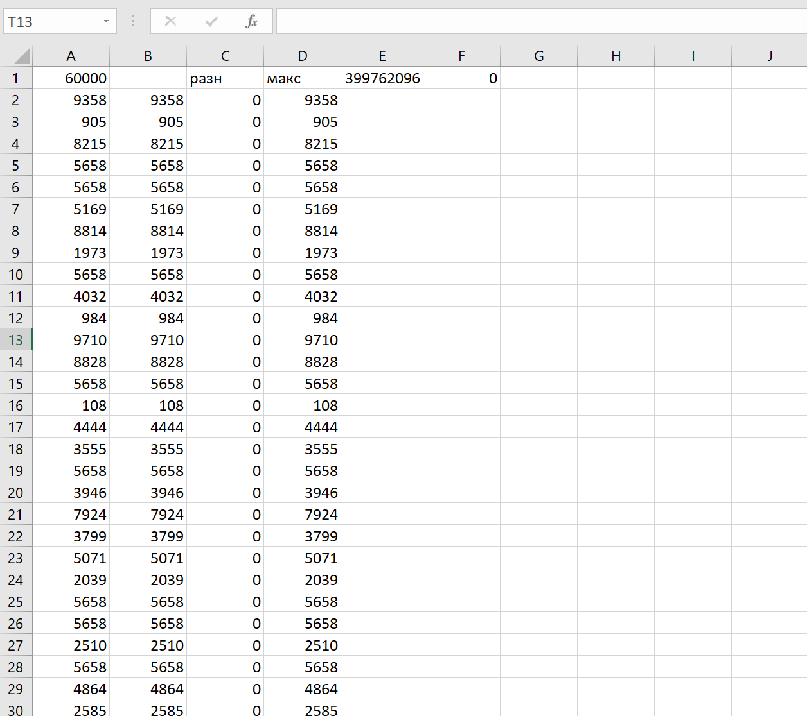
- Мы видим, что минимальная разница равна нулю. Она нам не подходит, так как если заменить число таким же числом, то ничего не получится. Следующие разницы деляется на 3 (3,6,9,12,15), так что они тоже никакой роли не играют. Минимальная разница, которая не делится на 3, это число 16. Меняем число 8692 на 8676 и видим, что теперь сумма на 3 не делится (1), так что 399762080 - наш второй ответ
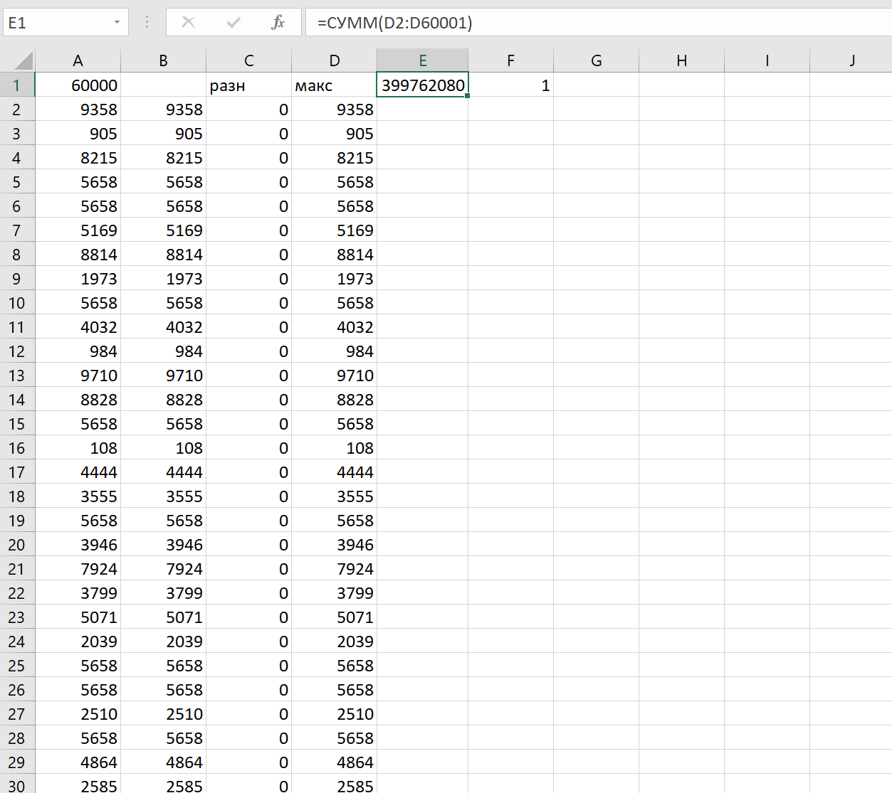
Ответ: 127127 399762080
Назад |